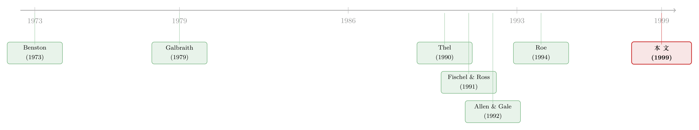

「操纵」从来没被证明：一部证券法的政治起源
本文读的是 Mahoney (1999, Journal of Financial Economics)：1934 年《证券交易法》的官方理由是「消灭操纵」，而操纵的头号证据就是 1920 年代的「股票池（stock pools）」。但作者把参议院自己掘出来的证据翻了一遍，又用池子标的股票的收益数据做了检验——结论是，这些池子从未被证明是成功的操纵。真正把这部法律推上台的，是罗斯福想把纽交所收归联邦、以及国会对经纪商「自营」的敌意。
1 一个人人都「知道」的故事
先说一个几乎写进所有教科书的故事。
1920 年代的华尔街，一群交易者凑钱组成一个「池子」，推举一位「池经理（pool manager）」，约定彼此不许私下背叛。经理先在某只股票上建仓，靠买入把价格抬起来，引来看行情纸带（tape）的全国散户跟风；接着用一边买一边卖的「活跃」交易制造「有大事将发生」的假象，再配上枪手写的小道消息和虚假新闻。等公众蜂拥入场、价格自己往上飞时，经理果断出货，给自己抽一笔分成，把剩下的钱分给参与者。
这是 Galbraith (1979) 在《大崩盘》里给出的经典描述，也是 1934 年《证券交易法（Securities Exchange Act）》立法的事实基础。该法的序言写得斩钉截铁：「证券的价格……频繁地易受操纵与控制」。而操纵的头号物证，就是这些股票池。负责调查的参议院银行委员会——也就是以首席法律顾问 Ferdinand Pecora 命名的「Pecora 听证会（Pecora Hearings）」——在 1932 到 1934 年间开了 11,000 页的庭审记录，最后在《Fletcher 报告》里下了定论：1929 年仅纽交所就有 105 只股票成为一个或多个池子的标的，而这套手法「奏效了」。
故事讲到这里，逻辑闭环、人人信服。Thel (1990) 说听证会「一次又一次地揭露了明目张胆且无处不在的操纵」；Teweles 和 Bradley (1987) 说听证会拿出了「大规模操纵的确凿案例」。
可是，本文作者偏偏要问一个煞风景的问题：这套手法，真的奏效了吗？
2 真正的张力：证据从来没说「操纵成功」
这里要先把一个常被混为一谈的区分讲清楚。
现代证券监管最操心的，是「知情交易（informed trading）」里那部分通过不正当手段获取信息的——也就是内幕交易（insider trading）。但 1934 年立法者盯着的不是这个。他们盯的是操纵（manipulation）：一种「无信息」的交易，仅凭买卖本身就人为地扭曲股价。这是两件事。Goodwin v. Agassiz (1933) 这桩著名判例当时甚至认定，公司内部人在交易所这类非面对面的交易中，对交易对手并不负有披露义务——也就是说，1934 年的时候，内幕交易在法律上还是个没定论的灰色地带。国会谴责的是操纵，不是内幕交易。
那么，操纵到底能不能成功？
这是一个有理论分量的问题。Fischel 和 Ross (1991) 的论证很犀利：仅靠交易（而非虚假陈述或虚构成交）来操纵价格的「基于交易的操纵（trade-based manipulation）」根本不可能盈利。道理在于，要赚钱，操纵者的买入必须把价格推高、且这个高位要维持足够久，长到他能从容出货。但如果股价主要是对信息的到达做反应，这就办不到——操纵者会发现自己成了别人交易利润的「来源」，而不是「接收者」。
后来的理论给操纵留了一线生机：当一笔大额买入出现时，其他交易者无法确知买家是「知情」还是「无知」的，因而无法判断该不该重估股价。在合适的假设下，大额交易可以制造一段足够长的价格上涨。Allen 和 Gale (1992)、Allen 和 Gorton (1992)、Jarrow (1992) 各自给出了「操纵可以盈利」的模型。也正因为现实中操纵如今违法、没法用当代数据检验，这一支文献才反复回到 1920 年代的池子里找素材。
于是问题变得很具体、也很可检验：如果池子是成功的操纵——先拉抬、再出货——那么池子标的的股价应该先涨、后跌，出现一个明显的反转（reversal）。 反过来，如果价格涨上去之后并不回落，那就说明价格反映的是真实信息，而非凭空制造的泡沫。
这就是本文的核心检验思路。把「操纵」翻译成一个收益数据上可以证伪的预测——这是全文最漂亮的一步。
3 识别策略：把「操纵」写成一个可证伪的预测
本文没有花哨的工具变量，它的识别力恰恰来自把含糊的指控翻译成一个干净的事件研究（event study）预测。
逻辑链条是这样的。操纵的定义性特征是「拉高—出货」：先靠买入把价格顶到「不该有」的高度，再趁公众接盘把高估的股票甩出去，而价格随后必然回落。所以——
- 若池子是成功的操纵：股价在池子开仓前后上涨，但在随后的数月内反转、回落。
- 若池子是知情交易（池子里有内部人、或有掌握真实信息的交易者）：股价在开仓前后上涨，但不反转，因为它反映的是真信息。
样本怎么来？作者从 Fletcher 报告点名的 1929 年 105 只「池子股」出发，剔除其中 6 只优先股、1 只封闭式基金、1 只与名单中另一只仅投票权不同的重复股票，得到 98 只普通股；这 98 只里有 74 只能在美国国家档案馆找到对应的书面池子协议（pool agreement）。这些协议有日期、有池经理、有存续期，期限从两个月到两年不等。换句话说，作者不是泛泛地谈论「池子」，而是逐只锚定到了一份份真实的合同上。
一个常被忽略的样本问题：那个被反复引用的「1929 年 105 个池子」其实大大低估了池子活动。因为问卷只询问纽交所挂牌、且成交超过 10,000 股的池子；大量更小的池子、以及非纽交所挂牌股票上的池子都没被统计进来。这也提醒我们，「105」这个数字本身就带着调查口径的偏差。
结果呢？本文给出的核心发现是：池子标的股票在池子开仓前后平均录得正的异常收益（positive abnormal returns），但这些收益在随后的六个月里并不反转。
这正是「知情交易」的指纹，而不是「成功操纵」的指纹。如果真有人在拉高后出货、把接盘的公众坑了，价格理应在出货后掉头向下；可数据里看不到这个回落。于是那个人人都信的故事，第一次出现了裂缝。
诚实地说一句：本文第 5 节的具体回归系数与 t 值，在我手上这份正文里被截断了，我不替它编造数字。但收益的方向与形态——开仓前后为正、其后六个月不反转——是作者明确写下的结论，也是整个识别逻辑的落点。这一点足以支撑「与成功操纵不一致」的判断。
4 反转出现：池子到底是来干什么的？
既然不是操纵，那这些池子在做什么？本文给出的答案，是把 1920 年代的市场放回它自己的技术条件里去看——而这恰恰是「现代人对池子的谴责」所缺失的那块拼图。
第一，分销股票（distribution）。 Carosso (1970) 指出，前 SEC 时代的投资银行很少承销股票，股权主要通过「二次分销」进入市场：某个内部人或机构私下买了一大笔，再通过经纪商卖出。经纪商靠组建池子来把这些分销「辛迪加化（syndicate）」，就像投资银行把债券承销辛迪加化一样。Burdett 和 O'Hara (1987) 提醒我们，纽交所的拍卖机制本就是为中小额交易设计的，处理不了大宗交易——今天的大宗交易要靠「大宗交易（block trading）」机制，把一大笔单子「兜售」给交易所外少数几家机构以减少价格冲击。而在 1920 年代，纽交所的规则还不支持现代形态的大宗交易，池子在功能上扮演的，正是后来大宗交易承担的角色。在 74 个池子里，17 个与一级分销有关，16 个与二级分销有关。
接着，一个自然的问题是：剩下那些「单纯为交易而设」的池子呢？
第二，做市（market making）。 除了专家（specialist），那些为自己账户买卖的「场内交易者（floor traders）」也在纽交所提供流动性。一个旁证很有意思：池子常常在「可能出现订单失衡」的时点成立——比如拆股、送股之后（拿到额外股票的人里总有人想卖）。一位化名「纽交所经纪人」的评论者 (1930) 直言，拆股、增股或库存股发售时，「显然需要某种池子或交易账户的支撑」。在 41 个交易型池子里，有 8 个是在拆股、送股、资本重组或并购导致新股发行/挂牌后的 30 天内成立的——很可能就是场内交易者出于做市目的而组建的。
第三，知情交易。 公司内部人会参与一些池子；又因为银行家、经纪商常坐在工业公司的董事会上，一家运作池子的经纪行里，往往有合伙人同时是标的公司的内部人。Richard Whitney（时任纽交所主席）的说法很直白：一群人觉得某只证券「定价偏离了」，于是去买，一直买到他们认为「价格归位」为止。如果池子参与者不仅是知情、而且是内部人，那么以现代眼光看，该谴责的是它助长了内幕交易——但那是今天的关切，不是 1934 年国会的关切。
那「虚假成交」和「虚假新闻」这些铁证呢？本文指出，听证会其实几乎没挖出具体的劣迹。所谓「洗售（wash sale）」的指控，源于委员会分不清「虚构交易」与「频繁但真实的交易」。George Whitney 描述过一笔做市操作，毛利 2%，他称之为「一笔普通的批发利润（ordinary merchandizing profit）」。可在「市场专业人士频繁交易必然是操纵」这一先入之见下，连这种正常买卖都显得罪证确凿。
到这里，反转就完成了：所谓「无处不在的操纵」，更像是一群不懂现代交易、又抱着政治目的的调查者，把分销、做市与知情交易，一股脑塞进了「操纵」这个筐里。
5 那么，这部法律到底为什么会通过？
如果证据不支持操纵，立法的真实动力又在哪里？本文把它归到两条线上。
第一条线，是总统的算盘。 把大萧条的祸首钉在华尔街身上，有助于替联邦政府卸责。Roe (1994) 和 Parrish (1970) 都指出，民粹派与进步派政客在 20 世纪初一直鼓吹加强对金融市场的政府控制，而公众在萧条中对华尔街的幻灭，被他们视作实现这一夙愿的最佳时机。罗斯福在 1932 年竞选时就承诺要把纽交所收归联邦。选举之后，听证会的剧本就是为总统的监管计划做铺垫——Fletcher 报告自己都坦承，调查「自始至终的目的，就是为所探查领域的补救性立法奠定基础」。所以，与其把它当作对证据的客观筛选，不如把它读作一份为总统监管方案辩护的「诉状（brief）」。
第二条线，是国会对「经纪商自营」的敌意。 委员会成员普遍相信，每只股票都有一个由终端投资者需求决定的「自然（natural）」交易水平；一旦市场中介为自己的账户交易，就添加了「人为」的供求、制造出「人为」的价格。Pecora 在听证中刻意把「自由公开市场里的正常买卖」和「池子或辛迪加的操作」对立起来。他们没有意识到，证券交易商愿意用自有资金做交易，恰恰能在不增加价格波动的前提下提升流动性。正因如此，本文提出一个关键判断：国会想消灭池子，根子上是出于它对经纪商作为「自营方（principal）」、而非「客户代理人（agent）」去交易的敌意。场内交易者——这些既为自己账户买卖、又常参与池子的人——于是成了被重点开火的对象。
换句话说，《证券交易法》不是一面照妖镜，而是一台政治机器。它给「政治控制纽交所」这件事，披上了「消灭操纵」的技术外衣。
（关于「金融监管的政治起源」这条更大的线，可参见《金融发展会「倒退」吗？——一段被遗忘的二十世纪金融史》；而把「监管偏见 + 媒体偏见」当作一个可观测机制来研究的范例，则见《perceptions-and-the-politics-of-finance》。）
6 文献脉络
把这篇论文放回它所在的两条文献里，会看得更清楚。
一条是「金融的政治学」。Roe (1990, 1994) 论证民粹政治如何塑造了限制金融中介持有控股权的监管结构；Jensen (1991, 1993) 识别出 1980 年代末抬高收购成本的监管背后同样的政治压力；DeAngelo、DeAngelo 和 Gilson (1994, 1996) 则描述了针对垃圾债的监管与媒体偏见如何促成了对两家保险公司的监管接管。本文是这一谱系在「20 世纪美国金融最核心的监管事件」上的一次应用。
另一条是「操纵」本身的理论与历史。早期是 Galbraith (1979) 给出的经典叙事，以及 Seligman (1982)、Ritchie (1975) 对 Pecora 听证会的史学梳理；Benston (1973) 很早就对《证券交易法》的披露条款做过评估。理论上，Fischel 和 Ross (1991) 主张基于交易的操纵无法成功，而 Allen 和 Gale (1992)、Allen 和 Gorton (1992)、Jarrow (1992) 给出了相反的「操纵可盈利」模型；Thel (1990, 1994) 则从法律史和「操纵机制」的角度切入。这些模型在缺乏现代数据时，反复以 1920 年代的池子为经验靶子——而本文恰恰回到这个靶子，用收益数据告诉大家：靶子上并没有「成功操纵」的弹孔。

本文所处的位置，正是这两条线的交汇点：它既用事件研究的工具检验了「操纵假说」，又把检验结果接回了「监管的政治经济学」。
（在本博客里，与这条线最对得上的，是同样解剖股票池的《market-manipulation-a-comprehensive-study-of-stock-pools》，以及一篇把「合谋的机会」当作研究对象的《the-opportunity-for-conspiracy-in-asset-markets》。）
7 评论与延伸（Q&A + 研究方向）
(a) 几个可能的疑问
Q：「没有反转」就足以证明不是操纵吗？会不会只是反转太慢、六个月还没显现？
这是最该追问的一点。本文的逻辑严格说来是「不一致（inconsistent）」而非「证伪」——它无法证明操纵原理上不可能成功，只能说在这批池子里，数据形态不像成功操纵。如果操纵的拉抬效应能延续半年以上而不回落，那它和「真信息」在统计上就难以区分了；但那样的话，「操纵」一词也就失去了它「人为、不可持续」的本来含义。所以六个月无反转，至少把举证责任推回给了指控方。
Q：操纵和知情交易、做市，到底怎么区分？会不会只是换了个好听的名字？
区分的关键在「价格是否反映真信息」。做市与知情交易推动的价格变动会持续（因为对应真实的供求或信息），操纵推动的价格变动应当回落（因为是凭空制造的）。本文正是用「事后是否反转」这把尺子来做切分的，而不是靠交易者自己怎么称呼自己的行为。
Q：样本只有 1929 年、74 份有协议的池子，会不会以偏概全？
确有局限。一是只覆盖纽交所挂牌、成交超 1 万股的大池子，遗漏了大量更小或场外的池子；二是「有书面协议」本身可能是一种选择——更正规、更接近承销辛迪加的池子，恰恰更可能留下合同。这种选择如果存在，反而会让样本偏向「合法分销/做市」一端。这是读结论时要放在心里的一道折扣。
Q：池子里明明有内部人参与，这难道不算坏事？
算，但要分清是哪种坏。内部人参与意味着内幕交易，而内幕交易在 1934 年法律上尚无定论（Goodwin v. Agassiz, 1933）。本文的要点不是替池子洗白成「清白无害」，而是指出国会用来立法的那个具体罪名——操纵——并没有被证据支持；真正可议的内幕交易，反倒不是当时的立法关切。
Q：那《Fletcher 报告》是不是在撒谎？
本文用词很克制：与其说撒谎，不如说它是一份「诉状」而非「客观筛选」。报告自己写明目的是为立法奠定基础。在「价格上涨本身即操纵证据」「中介自营必然破坏稳定」这些先入之见下，同一批事实会被系统性地解读成对操纵有利的方向。这是视角问题，未必是伪造问题。
Q：这对今天的市场操纵监管有什么含义？
它提醒我们，「操纵」是个极易被滥用的指控：很多看起来可疑的交易（频繁买卖、大额建仓、做市），在功能上是市场运转所必需的。监管若以「中介不该自营」为底色，可能误伤流动性提供者。把操纵指控落到「价格是否事后回落」这类可检验的标准上，比诉诸直觉更稳妥。
(b) 几个可能的研究问题与提案
1. 把同样的「反转检验」搬到公司债市场的疑似操纵上。 - 【经济故事】公司债在场外（OTC）交易、透明度低、单券流动性差，理论上比股票更易被「做局」。但 TRACE 之后我们有了逐笔成交数据，可以检验：在被监管点名或被诉的疑似操纵债券上，价格是「拉高后回落」（操纵）还是「持续」（知情/做市）？ - 【可行性】中。数据（TRACE + 执法案件清单）可得；难点在于债券事件研究的「异常收益」基准比股票难构造（需控制利率与信用曲线），且操纵案件样本小。识别上可借鉴本文的「反转 vs 持续」二分法。
2. 区分「做市」与「操纵」的微观结构尺子。 - 【经济故事】本文的历史叙事其实提出了一个一般性命题：中介自营既可能提供流动性、也可能被指为操纵。能否用现代逐笔数据，构造一个能把二者分开的指标（如订单失衡后的价格持续性、库存回补速度）？ - 【可行性】高。微观结构数据成熟，方法（VAR、价格冲击分解）现成。挑战在于找到「确证的操纵」作为标签——可用监管处罚案件做正样本。
3. 监管的政治起源：用跨国/跨期的监管事件做政治经济学检验。 - 【经济故事】本文把《证券交易法》解读为政治产物。能否把它一般化：当一国（或一州）的执政者有动机「控制交易所」时，是否更可能出台以「反操纵」为名、实则扩大行政权的证券立法？ - 【可行性】中。需手工编码各国证券立法的时点、内容与当时的政治格局（可借 Roe、Rajan-Zingales 的框架）。识别难在反向因果——危机既催生监管、也改变政治。
4. 外资持有人与「操纵」指控的政治便利性。 - 【经济故事】历史上「操纵」常被用来针对不受欢迎的市场参与者（本文里是经纪商自营；别处可能是外资）。当外资持股上升、本地政治情绪转向时，针对「外资操纵」的监管指控是否系统性增多？ - 【可行性】中偏低。需要把「监管/舆论的操纵指控」量化（可用新闻文本），再与外资持股变化对接。数据拼接成本高，但文本分析使其逐渐 doable。
5. 「池子」作为前承销时代的大宗交易机制：制度替代的实证。 - 【经济故事】本文提出池子在功能上是现代大宗交易/承销辛迪加的前身。能否找一个制度变迁的断点（如纽交所大宗交易规则的引入），检验池子活动是否随之消退、价格冲击是否下降？ - 【可行性】低偏中。历史数据稀缺、需档案工作，但若能定位规则变更的确切时点，会是一个干净的「制度替代」自然实验。
8 我的判断与参考文献
贡献。 这篇论文最了不起的地方，是把一个被叙事和直觉统治了六十多年的「常识」，拆成了一个可证伪的命题，再用数据去碰它。它同时做了两件难事：一是史料层面的「祛魅」——证明 Pecora 听证会几乎没拿出具体的操纵物证，所谓铁证多是认知混淆（把做市、知情交易、频繁真实交易都当成了操纵）；二是经验层面的检验——池子标的「涨而不反转」的收益形态，与成功操纵不符，与知情交易相符。把这两件事接到「监管的政治经济学」上，本文就不只是一篇翻案文章，而是一个关于「监管如何被政治需要塑造」的范本。
对识别的担忧。 我有三点保留。其一，「无反转」是「不一致」而非「证伪」，对反转窗口（六个月）和异常收益基准的设定相当敏感；换一个长窗口或换一个基准，结论的强度可能变化。其二，样本选择——只有大池子、且有书面协议者入样——很可能把样本推向「更合法」的一端，使结论偏乐观。其三，1920 年代的收益数据本身噪声大、可比性差，事件日（池子「开仓」）的确定也依赖协议日期，存在度量误差。
后续想看到什么。 我最想看到的，是把这套「反转检验」配上更细的池子内部交易明细（谁在何时买、何时卖），直接观察是否存在「拉高—出货」的时序，而不仅看价格的事后形态——这能把「操纵 vs 知情/做市」从间接推断变成直接观测。其次，是把它推广到一个有现代数据、又有确证操纵标签的市场（公司债或新兴市场股票），看本文的历史结论能否在数据更干净的环境里复现。
参考文献
- Allen, F., Gale, D. (1992). Stock-price manipulation. Review of Financial Studies 5, 503–529.
- Allen, F., Gorton, G. (1992). Stock price manipulation, market microstructure and asymmetric information. European Economic Review 36, 624–630.
- Anonymous (1937). Market manipulation and the Securities Exchange Act. Yale Law Journal 46, 624–647.
- Benston, G.J. (1973). Required disclosure and the stock market: an evaluation of the Securities Exchange Act of 1934. American Economic Review 63, 132–155.
- Burdett, K., O'Hara, M. (1987). Building blocks: an introduction to block trading. Journal of Banking and Finance 11, 193–212.
- Carosso, V.P. (1970). Investment Banking in America: A History. Harvard University Press, Cambridge, MA.
- DeAngelo, H., DeAngelo, L., Gilson, S.C. (1996). Perceptions and the politics of finance: junk bonds and the regulatory seizure of First Capital Life. Journal of Financial Economics 41, 475–511.
- Fischel, D.R., Ross, D.J. (1991). Should the law prohibit "manipulation" in financial markets? Harvard Law Review 105, 503–553.
- Galbraith, J.K. (1979). The Great Crash. Houghton Mifflin Company, Boston.
- Jarrow, R.A. (1992). Market manipulation, bubbles, corners, and short squeezes. Journal of Financial and Quantitative Analysis 27, 311–336.
- Mahoney, P.G. (1999). The stock pools and the Securities Exchange Act. Journal of Financial Economics 51(3), 343–369.
- Roe, M.J. (1994). Strong Managers, Weak Owners: The Political Roots of American Corporate Finance. Princeton University Press, Princeton, NJ.
- Seligman, J. (1982). The Transformation of Wall Street. Houghton Mifflin Company, Boston.
- Thel, S. (1990). The original conception of §10(b) of the Securities Exchange Act. Stanford Law Review 42, 385–464.